China Employee Termination: First-Hour Brief for Foreign Employers (Hourly Testing Run)
Key takeaways
- Foreign employers should control China termination risk in the first 60 minutes of each execution cycle.
- Most preventable failures are visible early: stale route assumptions, evidence contradictions, script drift, and payout mismatch.
- Pulse-style first-hour formatting makes decision priorities clear for non-China leadership.
- Legal route validity and execution readiness are dual gates and both must pass.
- Legal depth belongs in an appendix while practical actions lead.
Pulse lead
This run rotates to a first-hour brief format. The objective: define exactly what teams must check and decide in the first 60 minutes so avoidable risk does not compound later.
Plain-language legal/regulatory context first
China’s Labor Contract Law sets route boundaries and severance obligations. State Council implementation regulations and SPC interpretation shape dispute outcomes by testing procedural fairness, documentary reliability, and consistency between rationale and execution records. For foreign operators, route logic, evidence logic, communication logic, and settlement logic must remain aligned through closure.
First-hour action map (minute-by-minute)
0-10 min: Route revalidation
- confirm whether any fact changed since last cycle
- re-check route assumptions and protected-status flags
- if assumptions changed, auto-hold and rerun legal gate
10-20 min: Evidence integrity scan
- check chronology completeness and contradiction log
- assign owner/SLA for unresolved evidence gaps
- block employee-facing steps if critical contradiction remains
20-30 min: Communication control check
- verify final script version and manager acknowledgment
- confirm correction protocol for script drift
- no meeting without script lock confirmation
30-40 min: Settlement/payroll coherence check
- align settlement language with payroll worksheet mapping
- verify payment timing and component definitions
- require legal/payroll co-sign before commitment
40-50 min: Tax note and explanation check
- ensure one unified tax treatment note
- confirm employee-facing wording matches payroll logic
- validate local assumptions where needed
50-60 min: Go/no-go and authority confirmation
- confirm primary + backup approver coverage
- classify status: go / hold / escalate
- record next checkpoint and residual risks
Practical implications for foreign employers
- HQ: demand first-hour status output, not route-only memo summaries.
- Regional HR: unresolved critical checks should trigger automatic no-go.
- Payroll/finance: co-own 30-50 minute checks before communication.
- Managers: script discipline remains compliance-critical.
Scenario snapshots
Snapshot A: 0-10 minute recheck prevented stale route execution
Snapshot B: 30-40 minute worksheet check prevented payout mismatch
Snapshot C: 50-60 minute authority check prevented cutover drift
Daily SOP (first-hour model)
- Run first-hour action map at shift start.
- Assign owner/SLA for open critical issues.
- Hold execution until critical checks clear.
- Log go/hold/escalate outcome and rationale.
- Re-run first-hour map when material facts change.
- Close only when proof-based closure gate passes.
Required document checklist
- route memo + revalidation triggers
- chronology map + contradiction register
- script lock + briefing evidence
- settlement worksheet + tax note
- authority matrix (primary/backup)
- first-hour log with owner/SLA
- payment proof + reconciliation
- closure audit + archive checklist
Escalation ladder
- Tier 1: case owner triage
- Tier 2: legal/payroll technical validation
- Tier 3: regional go/no-go authority
- Tier 4: executive escalation for material impact
Governance cadence
- Daily first-hour review
- Weekly 30-min blocker/SLA review
- Monthly 60-min pattern recalibration
KPI pack
- unresolved critical first-hour checks
- check aging over SLA
- script-drift frequency
- settlement relock rate
- closure lag (signature to verified close)
- 30-day reopen rate
FAQ
Is a first-hour model legally required?
No. It is an operational governance model.
Can small teams use this?
Yes. Start with 0-40 minute checks.
Why this format for foreign clients?
It translates legal complexity into immediate operational priorities.
Is negotiated termination always safer?
Not automatically; execution coherence remains decisive.
When should external PRC counsel be mandatory?
High-risk unilateral routes, protected-status concerns, restructuring, and multi-city complexity.
Legal depth appendix
Anchors: PRC Labor Contract Law, State Council implementation regulations, and SPC labor-dispute interpretation. Combined implication: legality, fairness, and documentary reliability are jointly assessed.
Disclaimer
Informational only; not legal, tax, or employment advice. Seek qualified PRC advice for case-specific matters.
Sources
- National People’s Congress — Labor Contract Law of the PRC (English), 2007-12-13: http://www.npc.gov.cn/zgrdw/englishnpc/Law/2007-12/13/content_1384064.htm
- State Council — Implementation Regulations of the Labor Contract Law (Decree No. 535), 2008-09-18: https://www.gov.cn/gongbao/content/2008/content_1124615.htm
- Supreme People’s Court — Interpretation on Labor Dispute Application Issues (Fa Shi [2020] No. 26), 2020-12-29: https://www.court.gov.cn/fabu/xiangqing/243981.html
- China Briefing / Dezan Shira — Employee Termination in China, 2025-10-17: https://www.china-briefing.com/news/employee-termination-in-china/
- Littler — Key Recent Developments in China’s Employment Law, 2024-03-20: https://www.littler.com/news-analysis/asap/key-recent-developments-chinas-employment-law-china-us-comparative-perspective
- PwC Worldwide Tax Summaries — PRC Individual Taxes on Personal Income, 2025-01-15: https://taxsummaries.pwc.com/peoples-republic-of-china/individual/taxes-on-personal-income
Handoff packet standard for first-hour execution
At each cycle start, require a compact handoff packet:
- open critical checks + severity
- owner and SLA for each open check
- unresolved dependencies
- hold/release recommendation
- first two actions for current cycle
This prevents first-hour decisions from being made on incomplete context.
City-overlay calibration model
Apply a two-layer model:
- country baseline controls (route/evidence/script/settlement/closure)
- city overlays (local counsel triggers, evidence sensitivity, dispute timeline notes)
This helps foreign operators maintain consistency while respecting local practice variance.
Expanded scenario clinic
Scenario D: 10-20 minute evidence scan catches hidden contradiction
A chronology conflict surfaced in the contradiction register before manager outreach. Team held action, remediated records, and resumed only after owner sign-off.
Scenario E: 40-50 minute tax note check avoids mixed messaging
HR and payroll drafts contained inconsistent payout/tax language. Team unified note and revalidated communication copy before release.
Leadership one-page first-hour output
- route/evidence/communication/settlement/tax status
- active blockers with owner/SLA
- go/hold/escalate decision and rationale
- residual risk statement
- next checkpoint time and approver
Weekly execution review checklist
- Review unresolved critical first-hour checks and aging trend.
- Confirm owner accountability and overdue recovery plans.
- Identify recurring blocker combinations by entity/city.
- Assign one preventive control update per cycle.
- Record lessons learned and update first-hour template language.
Monthly recalibration workshop
Run a 60-minute cross-functional review with HR, legal, payroll, and regional leadership:
- top recurring first-hour failure clusters
- root-cause diagnosis per cluster
- one control change per cluster
- owner + deadline assignment
- prior-month effectiveness validation
KPI intervention matrix
- Green: stable/improving KPIs → maintain controls.
- Amber: one-cycle deterioration → increase monitoring and coaching.
- Red: two-cycle deterioration → mandatory corrective plan and leadership sign-off.
Regional control playbook
For multinational operators, standardize:
- escalation decision rights by tier
- minimum documentation quality threshold
- communication approval workflow
- settlement release preconditions
- proof-based closure requirements
This improves consistency across entities while preserving local overlays.
Quality guardrails before execution
- no unresolved critical first-hour check
- no missing owner or SLA
- no mismatch between settlement worksheet and communication copy
- no closure state before payment proof and archive checks
Common mistakes and prevention
- Mistake: first-hour review treated as status ritual
Prevention: action-linked blockers with hard-stop rules.
- Mistake: payroll enters after communication prep
Prevention: mandatory co-sign before commitment.
- Mistake: authority unclear at go/no-go moment
Prevention: primary/backup confirmation each cycle.
- Mistake: city variance ignored
Prevention: central baseline plus local overlays.
What to do this week
- Deploy one-page first-hour template to active cases.
- Define hard-blocker auto-hold criteria.
- Require legal/payroll co-sign before employee commitments.
- Confirm authority coverage at each cycle start.
- Start weekly KPI review and monthly recalibration.
- Add city-overlay notes with local counsel.
Need local employment support in China?
If you need a compliance-first partner for hiring, payroll, and risk controls in China, China-Payroll.com can help evaluate the right setup.
Image Prompt Pack
Create a 16:9 hero image for article title: 'China Employee Termination: First-Hour Brief for Foreign Employers (Hourly Testing Run)'. Scene: global operations team evaluating workforce model options for China market entry. Include motifs: decision matrix, org…